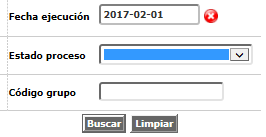
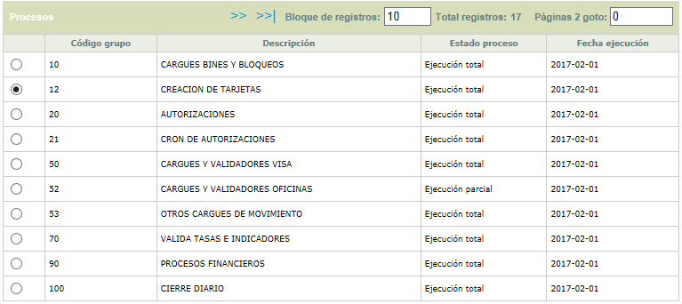
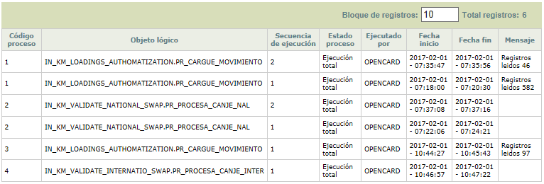

Historia automatización de procesos |
En este formulario la entidad puede consultar la información histórica de la ejecución de los diferentes procesos automatizados.
El formulario cuenta con un filtro que le permite al usuario seleccionar los criterios para los cuales desea consultar la informaciòn històrica de ejecuciòn de procesos.

Descripción de campos
Fecha ejecuciòn |
Campo obligatorio en formato YYYY-MM-DD en el cual se debe ingresar la fecha a la que corresponden los procesos que se desea consultar. |
Estado proceso |
En este campo tipo combo se selecciona entre No ejecutado, Proceso en ejecuciòn, Ejecuciòn parcial, Ejecuciòn total, Proceso pendiente, Ejecuciòn total y en blanco, el estado de los procesos a consultar. |
Còdigo grupo |
Campo con lista de valores de la cual se puede seleccionar el grupo al cual pertenecen los procesos que se desea consultar. |
Una vez seleccionada la fecha y los demàs criterios mediante el botòn buscar el sistema trae la informaciòn de todos los registros que coincidan.

El formulario cuenta con el hipervínculo procesos que despliega un nuevo formulario en el cual se muestran todos los procesos pertenecientes al grupo y que pueden ser ejecutados en la fecha y van acompañados de una casilla en la que se marcan aquellos que se desea ejecutar.

Descripcion Campos
Código proceso |
Despliega la identificación de cada uno de los grupos disponibles o programados para la fecha hoy del sistema. |
Objeto lógico |
En este campo se muestra el nombre del procedimiento o programa ejecutado en la fecha indicada |
Secuencia de ejcución |
Campo que indica el número de veces que fue ejecutado el proceso en la fecha indicada. |
| Estado proceso | Campo que despliega el estado del proceso para la fecha seleccionada. |
Ejecutado por |
Campo que muestra el mensaje enviado por el sistema al momento de finalizar el proceso. Por lo general cuando el proceso no culmina exitosamente muestra el error que indica la causa de no terminación del proceso. |
Fecha inicio |
En este campo se muestra la fecha y hora en la cual se ordenó el inicio de la ejecución del proceso. En caso de varias ejecuciones para la misma fecha, muestra la información correspondiente a la última vez que se dió inicio al proceso |
Fecha fin |
Campo que contiene la fecha y hora en la que finalizó la ejecución del proceso. En caso de varias ejecuciones para la misma fecha, muestra la información correspondiente a la finalización de la última vez que se corrió el proceso. |
Mensaje |
Campo que muestra el mensaje enviado por el sistema al momento de finalizar el proceso. Por lo general cuando el proceso no culmina exitosamente muestra el error que indica la causa de no terminación del proceso. |